智能伴侣
Software · AI CompanionDeepSeek · 适老化设计 · 2025老年人智能伴侣系统
面向老年人群体的 大模型智能伴侣系统：以健康、生活、家庭、娱乐、智慧为核心场景，把健康守护、用药提醒、紧急求助、出行陪伴、社群互动与情感陪伴放进同一个应用，全程 适老化交互设计——大按钮、大字号、语音优先，让智能服务真正陪伴老人，而不是给老人增加学习成本。
01
产品概览
Product Overview
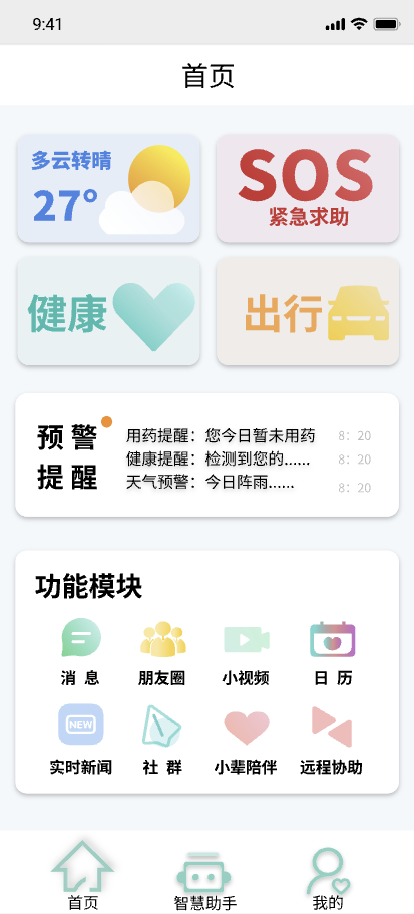
首页 · 健康 / SOS / 出行
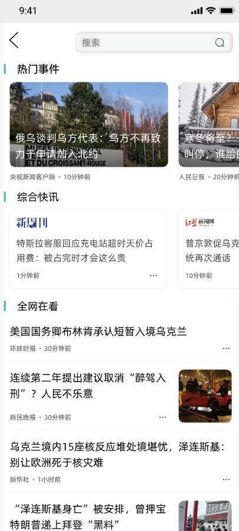
实时新闻
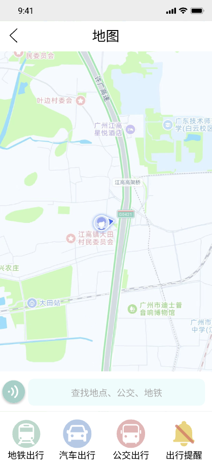
出行 · 地图导航
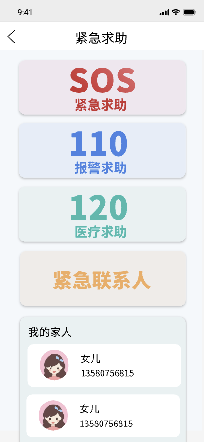
紧急求助 · SOS / 110 / 120
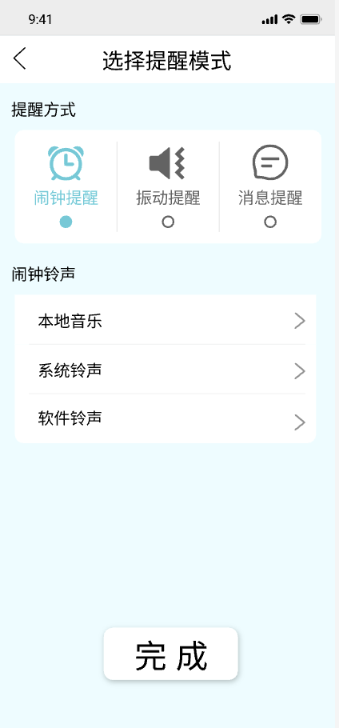
提醒模式设置
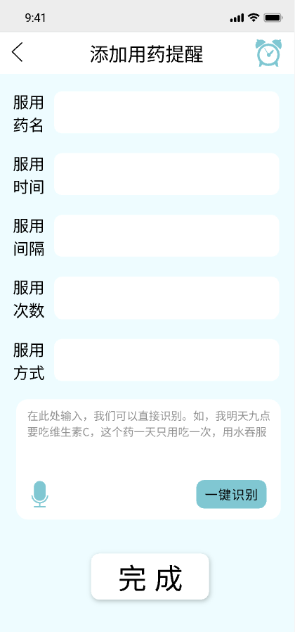
添加用药提醒 · 语音识别
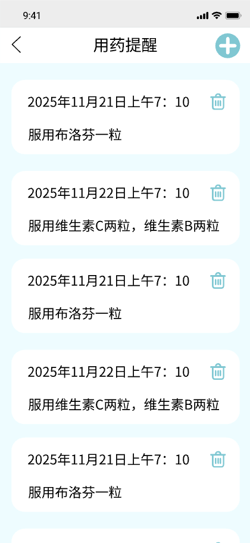
用药提醒列表
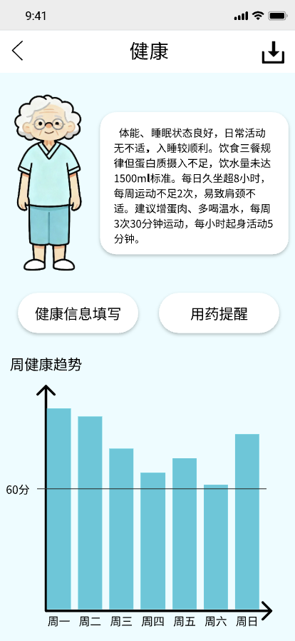
健康报告 · AI 建议
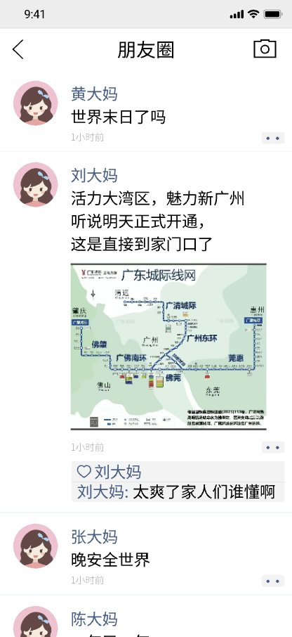
朋友圈
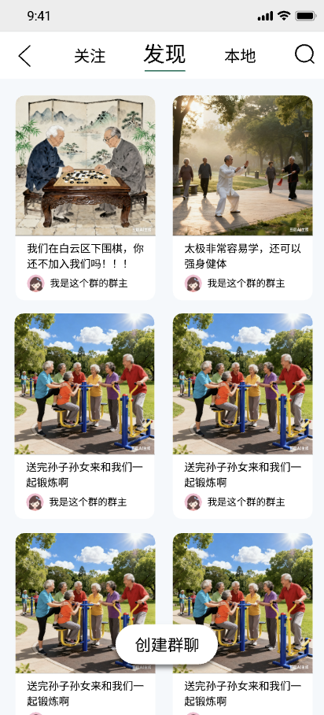
社群 · 发现
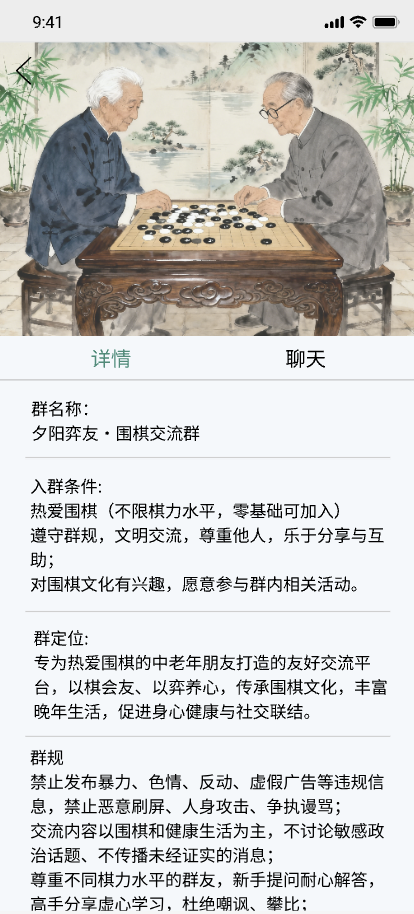
社群 · 群详情
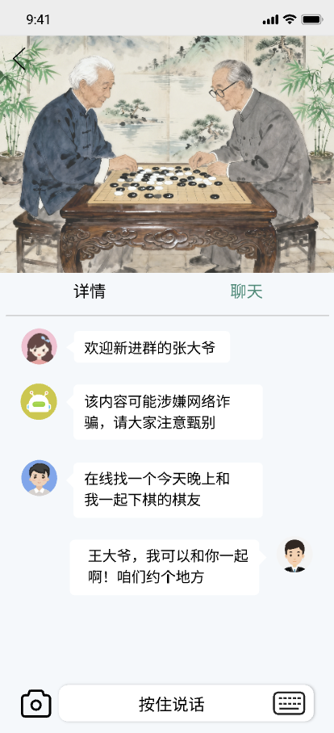
群聊 · AI 防诈骗提醒
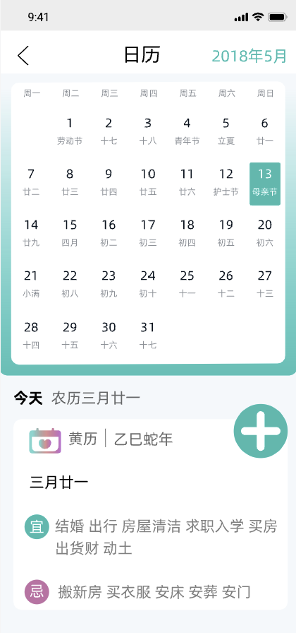
日历 · 黄历
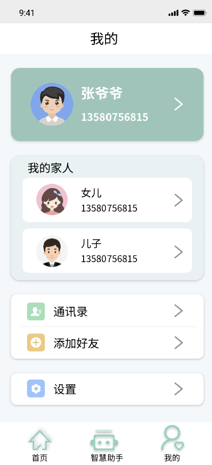
我的 · 家人绑定
02
要解决的问题
Problem & Insight
老年人面对智能设备时，真正的障碍不是功能不够，而是入口太深、字太小、操作太绕：一次用药提醒要翻五六层菜单，一句求助要在通讯录里找号码；子女又无法随时掌握父母的身体与位置状况，健康数据散落在各个设备里，出问题往往是事后才知道。
智能伴侣把高频刚需前置到首页：健康、SOS、出行 三大入口一屏直达；把"记住吃药"这类最容易被忽略的事交给语音录入 + 定时提醒；把独居老人的安全兜底交给一键求助与家人绑定，让关怀从"事后补救"变成"日常在场"。
03
核心功能
Key Features
健康守护首页直达健康入口，汇总体征数据自动生成健康报告，并给出 AI 建议，异常指标第一时间提醒
用药提醒语音识别说出药名与剂量即可创建提醒，支持提醒模式设置与提醒列表管理，告别繁琐表单
紧急求助SOS / 110 / 120 一键直呼，大按钮设计，跌倒或突发状况下无需解锁翻找
出行陪伴地图导航与出行辅助，结合实时位置让老人出门有人"带路"，家人更放心
信息获取实时新闻与日历黄历，用老人熟悉的信息节奏呈现每日内容，降低信息焦虑
社群互动朋友圈、社群发现与群聊，帮助老人重建社交连接，缓解独居孤独
AI 防诈骗提醒群聊内嵌大模型风险识别，对可疑话术与链接实时提示，守住老人的"钱袋子"
家人绑定个人中心支持家人绑定，子女可远程关注健康与提醒状态，形成家庭关怀闭环
情感陪伴大模型驱动的主动对话与陪伴式交互，老人说一句就能得到回应，而不是面对冷冰冰的菜单
04
技术与设计要点
Design & Stack
大模型能力DeepSeek 对话与生成驱动陪伴式对话、健康建议生成与群聊风险识别
语音交互语音识别（ASR）用药提醒等关键流程支持"说一句就建好"，减少打字负担
适老化设计大字号 / 高对比 / 大按钮关键操作一屏可达，SOS 与用药入口置顶，避免多层级跳转
地图与定位LBS 导航服务出行陪伴与位置共享，支撑家人远程关怀
端形态移动端应用（HarmonyOS）按移动端规范完成适配与交互设计
05
落地成果
Results
14个核心页面完成设计与实现
5大场景闭环：健康 / 生活 / 家庭 / 娱乐 / 智慧
3级安全兜底：SOS / 110 / 120 一键可达
1条完整链路：监测 → 提醒 → 求助 → 陪伴 → 社交
完整产品方案落地从场景梳理、信息架构到高保真界面与交互流程，交付可演示的完整产品原型
健康数据可视化健康报告自动生成并附带 AI 建议，把零散数据变成老人看得懂的结论
主动式安全能力AI 防诈骗提醒进入日常聊天场景，风险提示前置，而不是事后追责
家庭关怀闭环家人绑定打通老人端与子女端，让远程关怀有具体的抓手